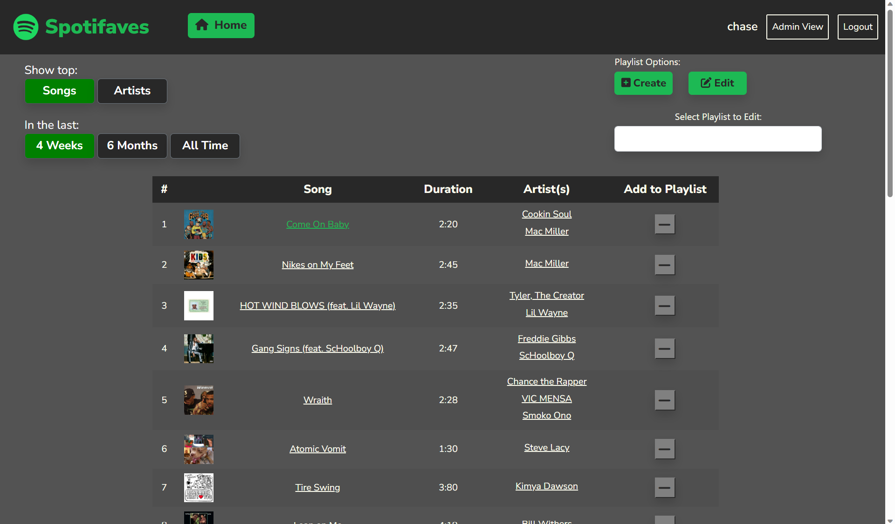
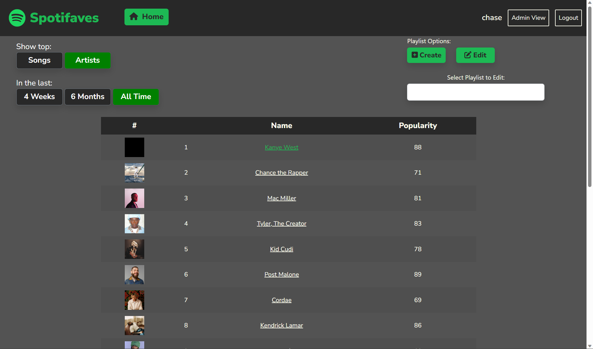
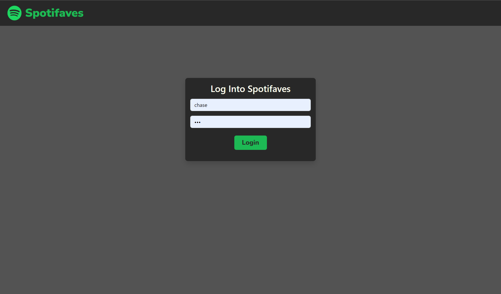
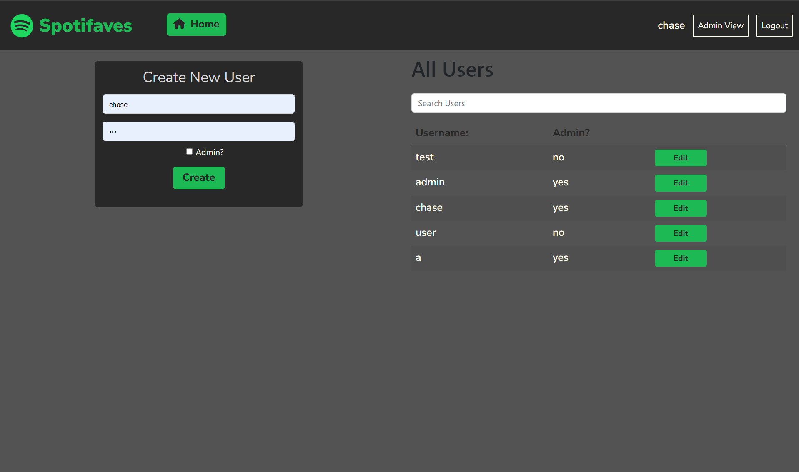
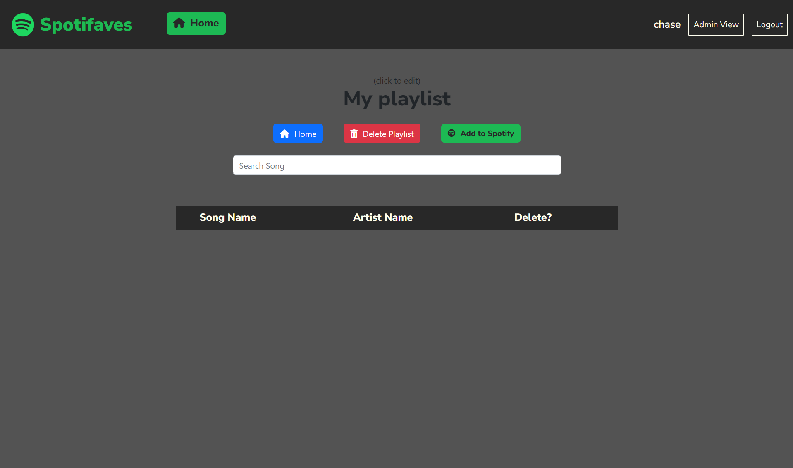
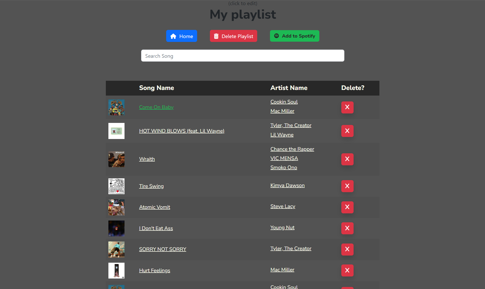
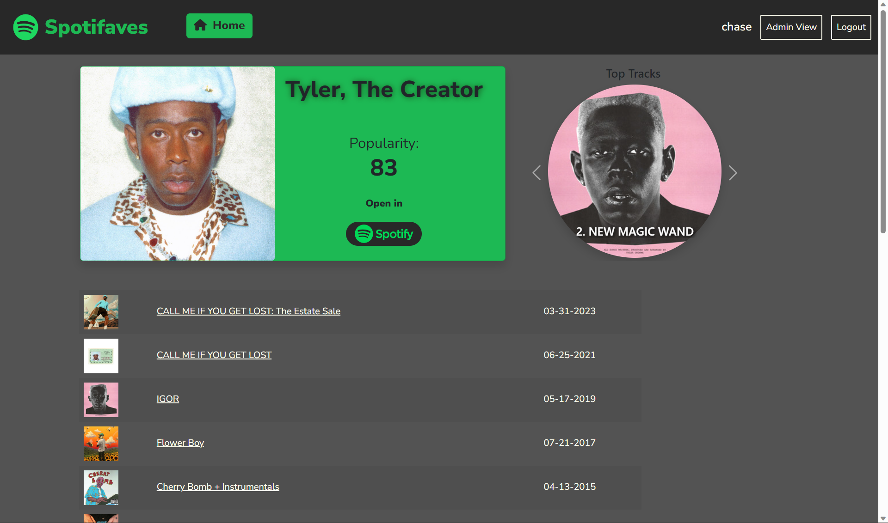
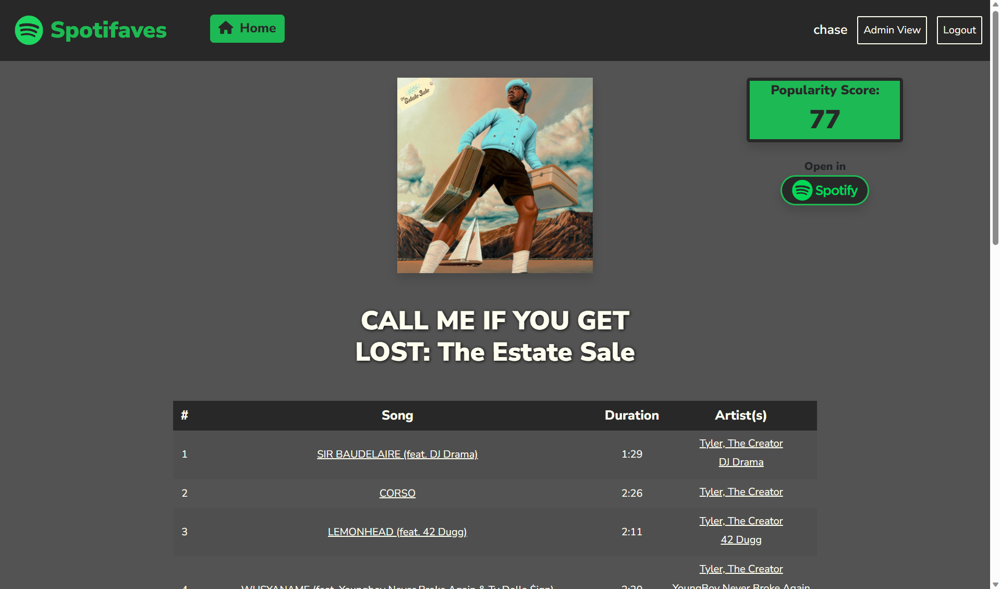
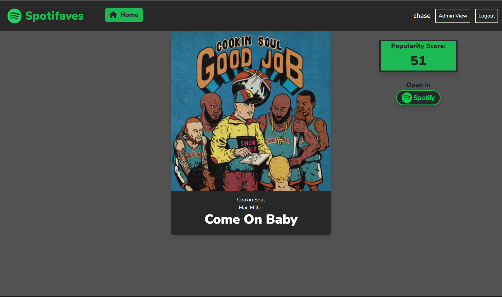

SpotiFaves is a web app that I developed as a final project in
CS402: Web App Development. The project required the use of an
online API, and I chose to use Spotify's Web API. I also needed
to use a MongoDB database to support user login, creating and
deleting users, admin controls, etc.
This application enables users to seamlessly log into their
Spotify accounts using OAuth authentication. Once authenticated,
it provides data regarding their music preferences
and listening habits. Additionally, the app gives users
the functionality to create and manage
playlists to add to their account.

Homepage view of the app. Here, you can see your top songs
and artists from the last 4 weeks, 6 months, and all time.
You can also create a playlist and populate it with songs
from the list. Each artist and song name is clickable, and doing so will take you to a page of information about the item clicked.

Homepage view when top artists are selected.

Login view of the app. Users are created by admins and put
into a mongoDB database.

This page is accessible to the admins. Here, you can add and
delete users, search and edit users, and toggle whether or
not a user is an admin.

Here is a newly created playlist with a temporary name. You
can change the name by clicking on it. Here, you can delete
the playlist, search songs, and even add the playlist to
your Spotify account.

Here is the playlist after it is populated with songs.

After clicking on the name of an artist in any page, you are
brought to a page of information about that artist. You can
see their name and popularity, as well as their 10 most
popular songs, and each of their albums. If you click the
spotify button, you are brought to the artist's page on the
spotify app.

After clicking any album name in the app, you are brought to
a page that shows each of the songs in the album. Each of
the songs are clickable as well as the names of the artists.

After clicking on a song you are brought to a page that
shows the song name, artist, cover art, and popularity.
Unfortunately, I ran out of time on the project assignment
before I could add more information about each song